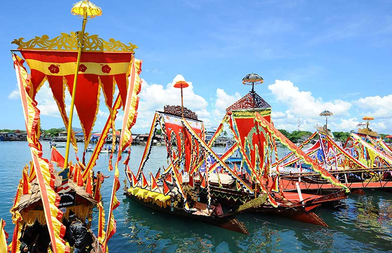

Welcome to The Andaman and Nicobar Islands!

The Andaman and Nicobar Islands, located in the Bay of Bengal, are known for their stunning natural beauty, rich
biodiversity, and unique cultural heritage. The islands’ culture is a blend of indigenous traditions, influences
from mainland India, and colonial history, creating a diverse and vibrant cultural tapestry.
Festivals in the Andaman and Nicobar Islands are celebrated with great enthusiasm, reflecting the cultural
diversity of the region. Island Tourism Festival, held annually in Port Blair, showcases the islands' cultural
richness through music, dance, and traditional crafts. Diwali, Christmas, and Pongal are also widely celebrated,
demonstrating the religious diversity and communal harmony of the islands' inhabitants. These festivals bring
together people from different backgrounds, highlighting the islands’ inclusive spirit.
The cuisine of the Andaman and Nicobar Islands is characterized by its use of fresh seafood and tropical fruits.
Fish, crab, lobster, and prawns are staples, often prepared with a blend of Indian spices and coconut. Popular
dishes include Fish Curry, Lobster Thermidor, and Coconut Prawn Curry. The cuisine also features traditional
recipes from the indigenous tribes, offering a unique culinary experience that reflects the islands’ natural
bounty and cultural diversity.
The islands' music and dance are influenced by both indigenous traditions and the various communities that have
settled there. Traditional dance forms like Nicobari dance, performed by the Nicobarese tribe during festivals and
celebrations, are integral to the cultural heritage of the islands. Folk music, often accompanied by instruments
like the dholak and flute, adds to the cultural vibrancy. These performances reflect the islands’ rich cultural
heritage and the traditions of its indigenous peoples.
The architectural heritage of the Andaman and Nicobar Islands includes colonial-era buildings, indigenous huts,
and modern structures. The Cellular Jail in Port Blair, a historic prison used during the Indian independence
movement, is a significant landmark and a symbol of the islands’ colonial past. Traditional Nicobarese huts, built
on stilts and made from natural materials like bamboo and palm leaves, showcase the indigenous architectural
styles adapted to the tropical climate.
Handicrafts from the Andaman and Nicobar Islands are known for their use of locally sourced materials and
traditional techniques. Shell crafts, coconut shell products, and cane and bamboo items are popular among
tourists. The intricate weaving patterns of the indigenous tribes are reflected in their mats, baskets, and other
handmade items, highlighting the artisanal skills and cultural heritage of the islanders.
The natural beauty of the Andaman and Nicobar Islands is unparalleled, with pristine beaches, crystal-clear
waters, and lush forests. The islands are home to diverse marine life and coral reefs, making them a popular
destination for snorkeling, scuba diving, and other water sports. The tropical rainforests are rich in flora and
fauna, providing a habitat for unique species and offering opportunities for eco-tourism and wildlife exploration.
Overall, the Andaman and Nicobar Islands’ culture is a harmonious blend of indigenous traditions, colonial
history, and modern influences. The islands offer visitors a unique experience, from their vibrant festivals and
delicious cuisine to their traditional crafts and breathtaking natural landscapes. The warm hospitality and
cultural diversity of the islands make them a captivating destination for travelers and culture enthusiasts alike.